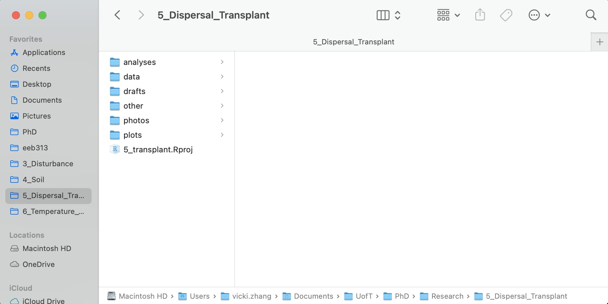

x <- 5
y <- 13
# 5 plus 13
x + y[1] 182.1.1 Lesson objectives
- Learn about the Markdown syntax and how to use it within the R Notebook.
- Set up the R Notebook
- Set up an R Project
- Understand how to follow the conventional data science workflow
2.1.2 Learning outline
- Explore RStudio interface (10 mins)
- Reproducible science with Markdown (40 mins)
- Project-Oriented Workflow (20 mins)
- Reproducible Science (10 mins)
- The Scientific Method (10 mins)
- Find your groups! (10 mins)
Last class, we introduced Markdown, the text format that RStudio uses. In fact, if you are following along this far, you should have already been typing your notes and code in a .Rmd file, or a RMarkdown file.
Let’s introduce more Markdown features! We encourage groups to try completing their group projects in RMarkdown, but more about that later.
We talked about using RMarkdown for notes and inline code last class. This is extremely useful for when you need to update objects or rerun analyses. You can also comment out code within the code chunk.
As a reminder, the keyboard shortcut to insert a code chunk is:
x <- 5
y <- 13
# 5 plus 13
x + y[1] 18eval=TRUE evaluates the code chunk (runs it); eval=FALSE does not (will just print the chunk)echo=TRUE prints the code chunk; echo=FALSE hides it but will still evaluate it
warning=FALSE will hide warnings; message=FALSE will hide messages from output
eval=TRUE## eval=TRUE, echo=FALSE prints output, but does not print code chunk
library(ggplot2)
qplot(mpg, wt, data = mtcars)Warning: `qplot()` was deprecated in ggplot2 3.4.0.
You can also indicate the sizes of figures by using fig.width and fig.height in your code chunk.
## in this R chuck, fig.width=2, fig.height=2
qplot(mpg, wt, data = mtcars)
I’ve already used these! You can use either * or - to indicate unordered lists. To indent, hit tab. Make sure there’s a space before your items in the list.
Unordered Lists (bullet points)
For ordered lists, use numbers. Again, hit tab to add sublists.
Ordered Lists (numbers)
kable displays r code chunks with tables nicely
library(knitr)
kable(head(mtcars))| mpg | cyl | disp | hp | drat | wt | qsec | vs | am | gear | carb | |
|---|---|---|---|---|---|---|---|---|---|---|---|
| Mazda RX4 | 21.0 | 6 | 160 | 110 | 3.90 | 2.620 | 16.46 | 0 | 1 | 4 | 4 |
| Mazda RX4 Wag | 21.0 | 6 | 160 | 110 | 3.90 | 2.875 | 17.02 | 0 | 1 | 4 | 4 |
| Datsun 710 | 22.8 | 4 | 108 | 93 | 3.85 | 2.320 | 18.61 | 1 | 1 | 4 | 1 |
| Hornet 4 Drive | 21.4 | 6 | 258 | 110 | 3.08 | 3.215 | 19.44 | 1 | 0 | 3 | 1 |
| Hornet Sportabout | 18.7 | 8 | 360 | 175 | 3.15 | 3.440 | 17.02 | 0 | 0 | 3 | 2 |
| Valiant | 18.1 | 6 | 225 | 105 | 2.76 | 3.460 | 20.22 | 1 | 0 | 3 | 1 |
In comparison:
library(knitr)
head(mtcars) ## does not nicely format the table mpg cyl disp hp drat wt qsec vs am gear carbMazda RX4 21.0 6 160 110 3.90 2.620 16.46 0 1 4 4 Mazda RX4 Wag 21.0 6 160 110 3.90 2.875 17.02 0 1 4 4 Datsun 710 22.8 4 108 93 3.85 2.320 18.61 1 1 4 1 Hornet 4 Drive 21.4 6 258 110 3.08 3.215 19.44 1 0 3 1 Hornet Sportabout 18.7 8 360 175 3.15 3.440 17.02 0 0 3 2 Valiant 18.1 6 225 105 2.76 3.460 20.22 1 0 3 1
Use the following format to add images:

For example: 
As an aside, let’s talk about rubber duck debugging. It is a simple but effective technique used by scientists to debug code. By explaining the code line-by-line to an inanimate object, such as a rubber duck, programmers can break down the code into smaller, more manageable pieces, and potentially identify the root cause of the problem. Or, explain it to a friend in the course! They can also help you find typos and other errors
And use the following format to add weblinks: [Description/Caption](weblink).
Use \vspace{2pt} to add white space, and use \newpage to add a page break.
Export a .bib file (e.g., from Zotero and Mendeley). Then, add the .bib to your YAML header.
---
title: My Report
output: html_document
bibliography: bibliography.bib
---Now, you can cite directly in your report, like below:
Some fact[@Smith2018]
Some fact supported by multiple papers [@Smith2018; @Tran1997]
Material adapted from Posit and R-bloggers.
RStudio projects make it straightforward to divide your work into multiple contexts, each with their own working directory, workspace, history, and source documents.
To create a new project in the RStudio IDE, use the Create Project command (top right). You can link your new project to an existing directory, or create a new directory entirely. Since we already have some RMarkdown written, let’s add our project to an existing directory.
When a new project is created RStudio, it creates a project file (with an .Rproj extension) within the project directory. This file contains various project options (discussed below) and can also be used as a shortcut for opening the project directly from the filesystem. It also creates a hidden directory (named .Rproj.user) where project-specific temporary files (e.g., auto-saved source documents, window-state, etc.) are stored. This directory is also automatically added to .Rbuildignore, .gitignore, etc. if required.
Now, whenever you open your project, it loads your project into RStudio and displays its name in the Projects toolbar (which is located on the far right side of the main toolbar). It even takes you back to where you were working last, so it opens all the scripts and files that were last open! You can also save your history, the objects in your environment, and an image of what your project looked like at the last time you closed it, but this can take up a lot of space if you do this each time.
You can work with more than one RStudio project at a time by simply opening each project in its own window of RStudio.
The goal of the here package is to enable easy file referencing in project-oriented workflows. In contrast to using setwd(), which is fragile and dependent on the way you organize your files, here uses the top-level directory of a project to easily build paths to files.
library(here)here() starts at /Users/vicki.zhang/Documents/UofT/PhD/Teaching/2023-2024/eeb313.github.iohere()[1] "/Users/vicki.zhang/Documents/UofT/PhD/Teaching/2023-2024/eeb313.github.io"You can build a path relative to the top-level directory in order to read or write a file:
here("1_lectures", "csv", "portal_data.csv")[1] "/Users/vicki.zhang/Documents/UofT/PhD/Teaching/2023-2024/eeb313.github.io/1_lectures/csv/portal_data.csv"These relative paths work regardless of where the associated source file lives inside your project, like analysis projects with data and reports in different subdirectories.
There is no a single “right” folder structure for analysis projects. However, this is a tried-and-true simple method that works (backed up by many data scientists!).
Create a folder on your computer that holds all the files relevant to that particular piece of work. This parent folder will contain the project’s .Rproj and all other subfolders, so it should have the same name as your project. Pick a good one. Spending an extra 5 minutes will save you from regrets in the future. The name should be short, concise, written in lower-case, and not containing any special symbols. One can apply similar strategies as for naming packages.
Use subdirectories to organize data, code, figures, notes, etc.
data typically contains two subfolders, namely, raw and processed. The content of raw directory is data files of any kind, such as .csv, SAS, Excel, text and database files, etc. The content of this folder is read-only, so that no scripts should change the original files or create new ones inside it. For this purpose, the processed directory is used: all processed, cleaned, and tidied datasets are saved here. It is a good practice to save files in R specific format, rather than in .csv, since the saving in .csv is a less efficient way of storing data (both in terms of space and time of reading/writing).figures is the place where you may store plots, diagrams, and other figures. There is not much to say about it. Common extensions of such files are .eps, .png, .pdf, etc. Again, file names in this folder should be meaningful (the name img1.png does not represent anything).reports. These reports can be of any formats, such as LaTeX, Markdown, R Markdown, Jupyter Notebooks, etc. Currently, more and more people prefer rich documents with text and executable code to LaTeX and such.analyses or scripts. Here, you keep all your R scripts and codes. That is the exact place to use prefix numbers, if files should be run in a particular order. If you have files in other scripted languages (e.g., Python), it is better to keep them in this folder as well. There can also an important subfolder called deprecated. Whenever you want to remove one or the other script, it is a good idea to move it to deprecated at first iteration. I recommend never deleting your code until you are sure that you have finished everything you wanted to do, even if the code doesn’t work (going back to it after a break usually helps!).
This convention guarantees that the project is self-contained, and it can be moved around on your computer or onto other computers and will still “just work”. This is a really important convention that creates reliable, reproducible science across different computers or users and over time.
As an overview of our environment, we can also use the sessionInfo() command. This is a good practice to have at the end of your code to document which packages you used and what version they were.
sessionInfo()R version 4.1.1 (2021-08-10)
Platform: x86_64-apple-darwin17.0 (64-bit)
Running under: macOS Big Sur 10.16
Matrix products: default
BLAS: /Library/Frameworks/R.framework/Versions/4.1/Resources/lib/libRblas.0.dylib
LAPACK: /Library/Frameworks/R.framework/Versions/4.1/Resources/lib/libRlapack.dylib
locale:
[1] en_CA.UTF-8/en_CA.UTF-8/en_CA.UTF-8/C/en_CA.UTF-8/en_CA.UTF-8
attached base packages:
[1] stats graphics grDevices utils datasets methods base
other attached packages:
[1] here_1.0.1 knitr_1.43 ggplot2_3.4.3
loaded via a namespace (and not attached):
[1] rstudioapi_0.15.0 magrittr_2.0.3 tidyselect_1.2.0 munsell_0.5.0
[5] colorspace_2.1-0 R6_2.5.1 rlang_1.1.1 fastmap_1.1.1
[9] fansi_1.0.4 dplyr_1.1.2 tools_4.1.1 grid_4.1.1
[13] gtable_0.3.4 xfun_0.40 utf8_1.2.3 cli_3.6.1
[17] withr_2.5.0 htmltools_0.5.6 rprojroot_2.0.3 yaml_2.3.7
[21] digest_0.6.33 tibble_3.2.1 lifecycle_1.0.3 farver_2.1.1
[25] htmlwidgets_1.6.2 vctrs_0.6.3 glue_1.6.2 evaluate_0.21
[29] rmarkdown_2.24 labeling_0.4.3 compiler_4.1.1 pillar_1.9.0
[33] generics_0.1.3 scales_1.2.1 jsonlite_1.8.7 pkgconfig_2.0.3 Notice that we have some base packages active even though we did not explicitly call for them.
What are the barriers to reproducibility?
Material from this section adapted from R for Data Science.
The main tools of data science are: importing, tidying, transforming, and visualizing data. We will go through all of these steps of data science so that you can tackle real datasets.

Note that if you are interested in doing a modelling project, these steps are different. Talk to Vicki and Mete if you want to tackle mathematical models!

Final assignment is in a group and to succeed, you need to understand team dynamics:
Check out the Contributor Convenent and the UofT Coders Code of Conduct
As a group, complete these tasks:
Make a GitHub account.